The 3DoT Board
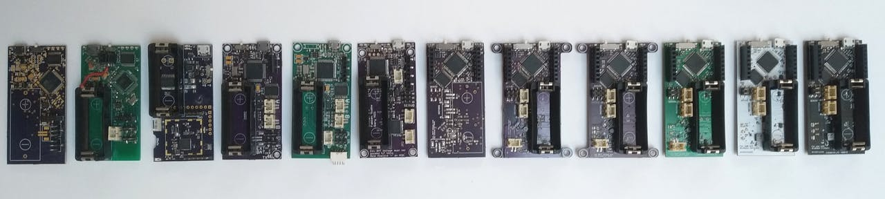
4-layer Metal Detecting Sensor Shield
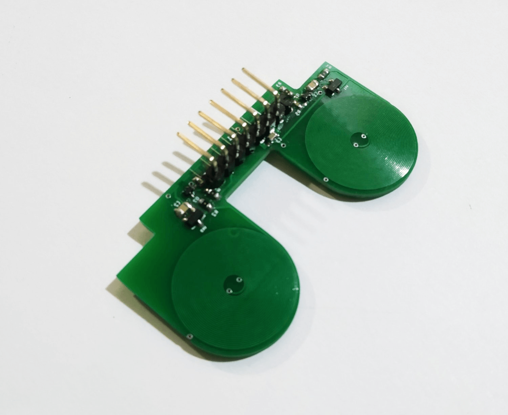
Simple but elegant IR Sensor Shield
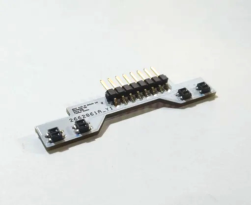
Robots
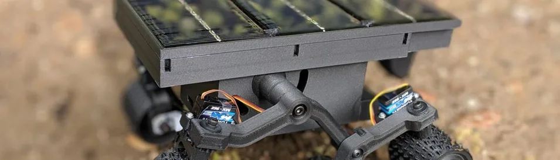
See all released robot images at Humans for Robots
"Telepresent" little robot I developed the electronics and firmware for.
Description
Micromouse is a world famous robotics competition where a small robot has to search, solve and speedrun a 16x16 maze. I joined a team with my two good friends Ricardo Alcaraz and Roswell Tiongco to attempt to build CSULB's best mouse yet.
First Attempt
Above you can see a short video of our first robot in action.
We wanted to create a very simple, easy to develop robot for our first attempt without worrying too much about speed. This is why we decided to use stepper motors, an arduino teensy and ultrasonic sensors. In hindsight, these were poor hardware choices but A LOT was learned in the process of developing this cute little tractor.
The main issue with the hardware is that the only input to the control system is the ultrasonic sensor readings. The ultrasonic measurements are too low resolution and lack the stability to base a reliable control system on. As a result, the robot only makes the end of the maze if we're lucky enough that it doesn't hit any walls.
2017/2018 Github Repository
The Real Deal
Features:
|
v2.0 (cancelled) |
v3.0 |
| Width |
75mm |
75mm |
| Length |
105mm (excluding "tail") |
105mm |
| Weight |
n/a |
TBD |
| Tires |
Kyosho MZT301-20 LM |
Kyosho MZT301-20 LM (available on Ebay) |
| CPU |
Tensilica Xtensa LX6 (in ESP-WROOM-32 module) |
STM32F405RG |
| MCU features |
160/240MhHz, 520KiB SRAM, Wi-Fi 802.11 b/g/n, Bluetooth v4.2 BR/DER and BLE |
160Mhz, 192+4 Kbytes SRAM, 1MB Flash. 9 GPIO Ports of up to 16 pins each. |
| Power Regulation |
TPS65400 - 5v 5A, 5V 4A, 2V 2A, 3.3V 0.5A, TPS61088 - 12V Boost |
TPS65400 - 5v 5A, 5V 4A, 2V 2A, 3.3V 0.5A, TPS61088 - 12V Boost |
| Battery |
Tattu 300mAh 7.4V 45C 2S1P LiPo |
Tattu 300mAh 7.4V 45C 2S1P LiPo |
| IR Emitters/Receivers |
SFH4550/TEFT4300 |
SFH4550/TEFT4300 |
| Gyroscope |
MPU-6500 |
MPU-6500 |
| Display |
0.96 inch SSD1306 128x64 yellow/blue OLED |
0.96 inch SSD1306 128x64 yellow/blue OLED |
| Motors/Encoders |
n/a |
Testing in progress |
| Ground effect fan |
n/a |
Testing in progress |
Full schematic pdf
2019 Github Repository
Description
When I took over the SophEE program in 2017, I decided to completely revamp the program in order to be more relevant to skills needed to conduct one's own projects. The main aspect being designing a system and its printed circuit board (PCB) from start to finish.
Day 1 consists of some introductions, ice breaking and deriving a concept of operations (ConOps). The next meeting, participants jump straight into creating a schematic in EAGLE and eventually lay out their PCB and get to see it manufactured and used in their final robot.
Throughout the process, they are mentored by myself and other IEEE officers and short, casual lectures are often featured on topics such as motor control, power system design, MOSFETs and more.
Note: The documents here are from 2017, so somewhat out of date, and I have learned a lot more about schematic layout and PCB design since. There are plenty of errors, but I am leaving it up as it is still a good resource for future IEEE student officers.
Project Files
 Name Last modified Size Description
Name Last modified Size Description
![[ ]](../icons/layout.gif) MX1508_Datasheet.pdf 2018-02-11 14:51 839K
Step1Package.pdf 2018-02-05 12:38 810K
Step2SymbolDevice.pdf 2018-02-09 01:53 430K
Step3Schematic.pdf 2018-02-09 01:53 559K
Step4Layout.pdf 2018-02-11 01:41 1473K
SophEEGuidetoGithub.pdf 2018-02-09 01:55 1183K
MX1508_Datasheet.pdf 2018-02-11 14:51 839K
Step1Package.pdf 2018-02-05 12:38 810K
Step2SymbolDevice.pdf 2018-02-09 01:53 430K
Step3Schematic.pdf 2018-02-09 01:53 559K
Step4Layout.pdf 2018-02-11 01:41 1473K
SophEEGuidetoGithub.pdf 2018-02-09 01:55 1183K
Links
Github Repository
Texas Instruments Reverse Polarity Protection Circuits and Smart diode Controller
Sparkfun SMD Soldering Tutorial
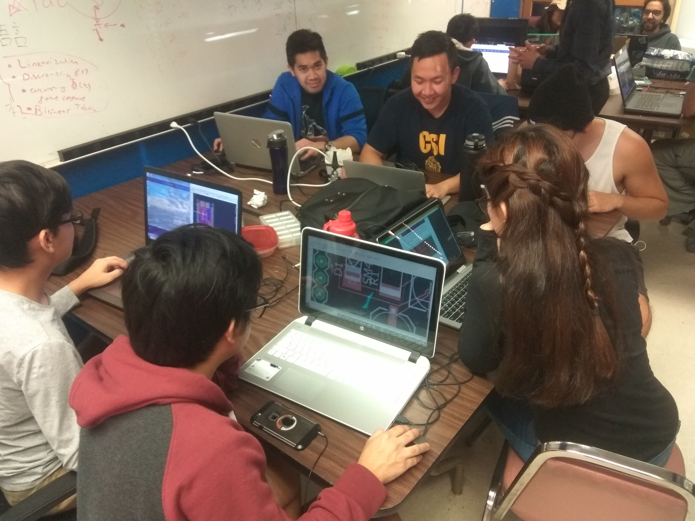
Flood Fill Pathfinding Algorithm
A powerful method of maze solving used for our Micromouse robot.
How it works
The maze is divided into cells, and the shortest distance from each cell to the goal is calculated. Initially, it is assumed there are no walls in the maze.
Then, as the mouse tries to reach the goal by moving to the neighboring cell with the lowest distance, the distances are updated every time a wall is discovered.
This is repeated, and so the mouse is able to map out the maze and the respective distances to the goal of each cell.
Upon returning to the start, it is simply a matter of connecting the shortest distances to derive a path that leads straight to the goal.
Images from Green Ye's micromouse lecture slides.
Pseudocode
create two dimensional array 'distance'
create two dimensional array 'walls'
position = bottom left coordinate of maze
for all elements in walls
element = empty
for all elements in distance
element = shortest distance to goal
while position != goal
if a new wall is discovered
push current coordinate to stack
for all accessible neighboring cells
push neighboring cell coordinates to stack
while !stack.isEmpty
coordinate = pop from stack
if distance != lowest distance of neighbors + 1
distance = lowest distance of neighbors + 1
for all accessible neighboring cells
push neighboring cell coordinates to stack
move to neighbor with lowest distance
A stack approach like this is essential, since using recursion will fill up memory much faster on our microcontroller. With a solid understanding of the algorithm and the functions that were going to be needed, it was time to move on to the implementation.
C++ Implementation
Since the architecture we are using for our mouse is mostly supported by C++ compilers, this was the obvious language to use.
The full code can be viewed on our project's Github page and is free for use.
In order to easily test the algorithm and mouse functions, the code includes a DebugTools class. The printMaze function, for example, prints an ASCII maze including distance values and walls.
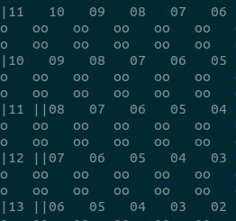
Besides the outer edge walls, each wall is displayed twice. This is intended, since walls are also stored in memory twice (one from each neighboring cell).
This function was extremely useful for debugging, and will also be used during live testing of the mouse, as it has capabilities for bluetooth serial communication.
3DoT Bootloader
A dedicated bootloader for the 3DoT board: a few hundred bytes smaller and with the added capability of entering the bootloader manually, in case of uploading troubles.
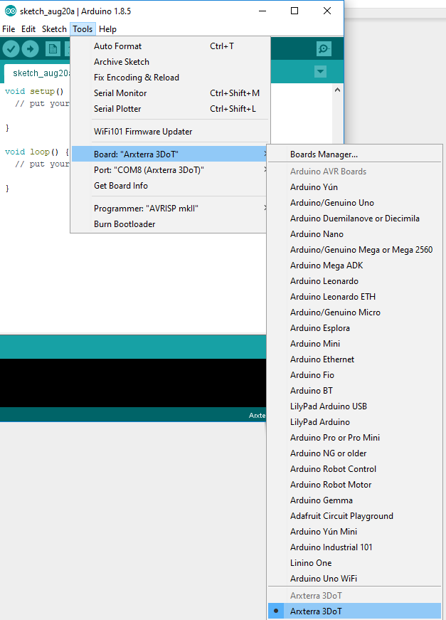
The bootloader conveniently integrated into the Arduino IDE.
See also: This guide I wrote on burning fuses and uploading bootloaders to ATMega32u4-based boards.
Chem-E-Car
Chem-E-Car is a student competition to build a chemical powered car to transport a certain payload a certain distance (weight and distance are only revealed an hour before the competition). I was asked by a group of Chemical Engineering majors at CSULB to design the electronics for their Aluminium-air battery powered car.
Although the system for this car was quite simple (turn a servo, read a sensor, start stop a motor), the difficulty came from making the system robust and easy to use for non-electrical engineers in a stressful situation where the sensors and batteries have to be disconnected, reconnected and the electronics are around corrosive chemicals.
I ended up using T connectors for the battery connection and color-coded banana-plugs (EC2) for the sensors as I found them to be robust enough for the application but also not too difficult to disconnect that the users will pull on the wires too hard and damage components down the line. JST connectors, for example, did not work well here.
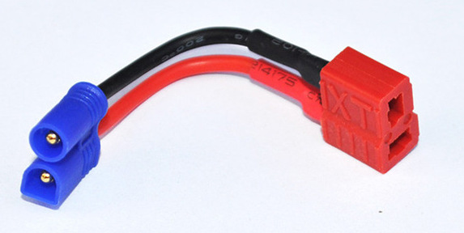
Left:EC2, Right:T connector
UCSB Hackathon
Earlier this year, I decided to try my hand at a Hackathon with my Micromouse teammates. We drove to Santa Barbara for one of the largest hackathons in the country and ended up winning "Best IoT Hack" for our trash can data collection device. I wrote a full summary on the event's Devpost page.
Engineers for a Sustainable World
As a member of Engineers for a Sustainable World (ESW), I worked on a solar kiosk that won grants from IBM Students for a Smarter Planet, 1st place in the CSULB Green Generation Mixer Project Showcase and a feature in the CSULB sustainability magazine.
For this year's Green Generation Mixer, I designed the electronics for an automated aquaponics system which gathered a lot of attention but lost to fellow club member Anesia Canty's amazing water filtration system
The main issue the team already working on the aquaponics project ran into had to do with timing the system to perform tasks at long intervals, such as turning off the lights after 3 hour intervals. Having some experience in IoT projects however, I knew this wasn't a very difficult problem. We ended up implementing a real-time clock module to wake up the microcontroller at certain intervals. For the Green Generation Mixer, we added a button to simply trigger every subroutine in turn to demonstrate the pumps, lights and sensors.
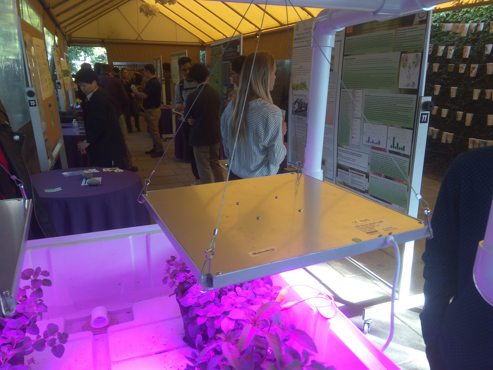
Aquaponics on Display
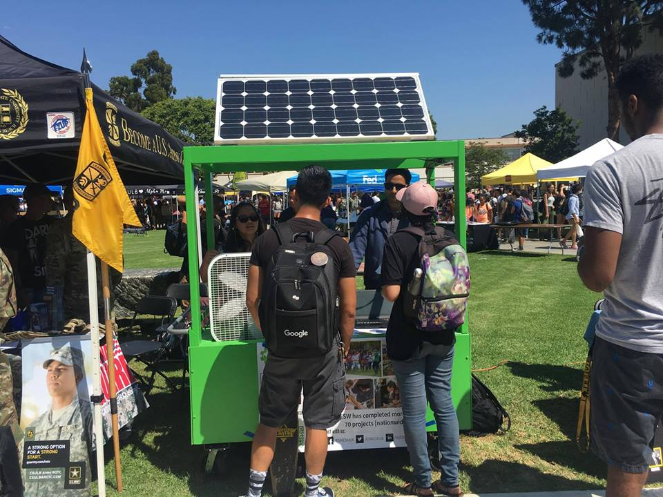
Solar kiosk supplying power to keep people cool and play music at CSULB's 2018 Week of Welcome
Web Development
Although I have no interest in web development as a career, I have created some websites for the student organizations I was a part of, my current startup, as well as the website you're seeing right now. This website was created using Pure.css css modules
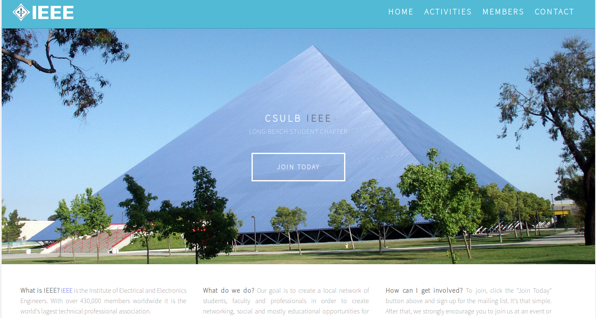
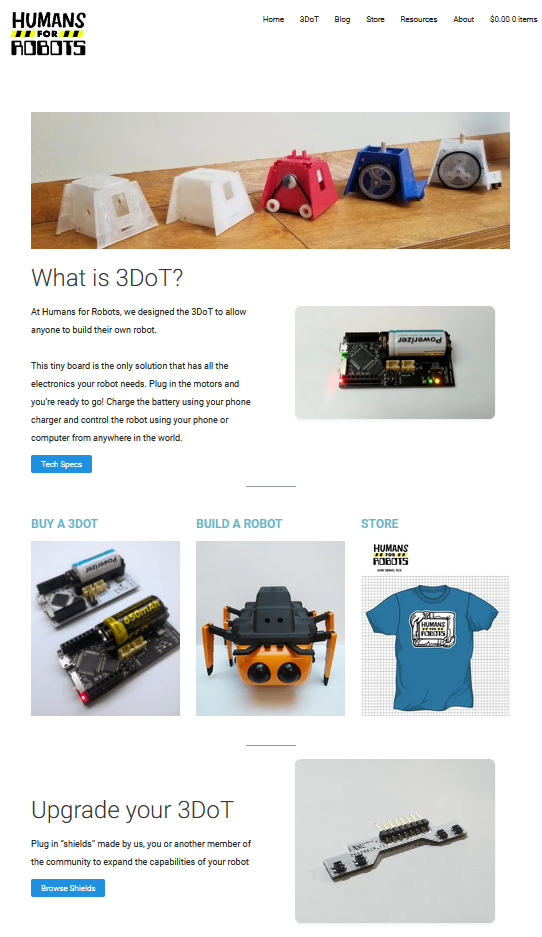